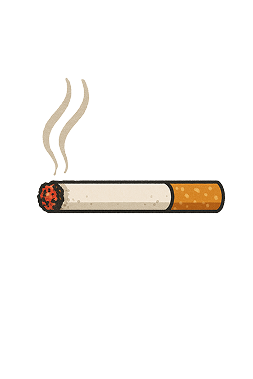

Nikotynizm
Czym jest uzależnienie od nikotyny?
Nikotynizm to jedno z najpowszechniejszych i najsilniejszych uzależnień chemicznych. Polega na fizycznym i psychicznym przymusie regularnego dostarczania do organizmu nikotyny, najczęściej poprzez palenie papierosów. Nikotyna błyskawicznie wpływa na mózg, powodując chwilową poprawę nastroju i koncentracji, co wzmacnia mechanizm uzależnienia.
Typowe objawy uzależnienia
- Głód nikotynowy: Silna, trudna do opanowania chęć zapalenia papierosa.
- Objawy odstawienne: Po odstawieniu nikotyny pojawia się drażliwość, niepokój, spadek koncentracji, bóle głowy i zaburzenia snu.
- Kontynuowanie palenia mimo wiedzy o szkodach: Osoba pali, chociaż wie, jak negatywnie wpływa to na jej zdrowie, finanse i relacje.
- Wzrost tolerancji: Potrzeba palenia coraz większej liczby papierosów, aby uzyskać pożądany efekt.
- "Rytuały" związane z paleniem: Papieros staje się nieodłącznym elementem porannej kawy, przerw w pracy czy spotkań towarzyskich.
Skutki zdrowotne
Palenie tytoniu jest przyczyną wielu śmiertelnych chorób. Do najpoważniejszych skutków należą:
- Nowotwory (płuc, krtani, gardła, przełyku),
- Choroby układu krążenia (zawał serca, udar mózgu, miażdżyca),
- Przewlekła obturacyjna choroba płuc (POChP),
- Przyspieszone starzenie się skóry i pogorszenie kondycji cery.